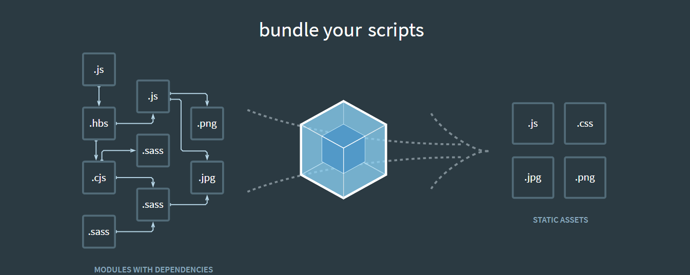
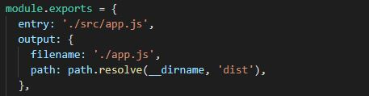
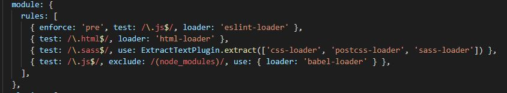
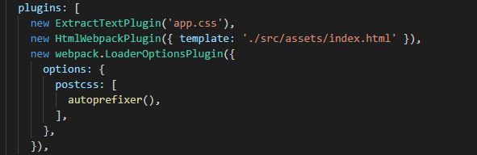

Webpack Short Intro
Alternative?

Features
- Bundling using dependency graph & IIFE
- Create dependencies from js (default), css, html and others
- Transpilation / Transciprion: Babel, TypeSctipt, Sass
- Linter, CSSComb
- Livereload & Hot Module Replacement
- Optimization:
- UglifyJS
- Tree Shaking
- Code Spliting:
- Cache
- Lazy Load
Installation
npm install webpack
npm install webpack-cli
npm install webpack-dev-server
Configure & Main Conception
- Entry
- Output
- Loaders
- Plugins
- Mode
Entry & Output
Loaders
Plugins
Mode
Thanks for watching
https://webpack.js.org/
https://webpack.js.org/configuration
https://webpack.js.org/loaders
https://webpack.js.org/plugins